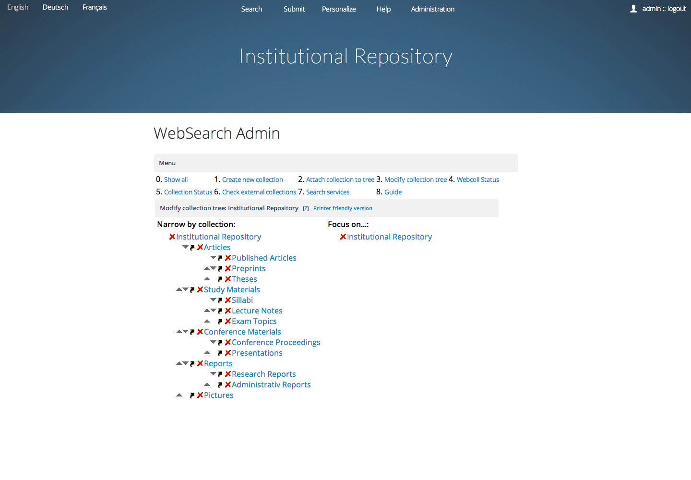

Create Collections¶
1. Introduction¶
Metadata corpus in Invenio is organized into collections. The collections are organized in a tree. The collection tree is what the end-users see when they start to navigate.

2. Create new collection and add the collection to the tree¶
To add a new collection, go to “1. Create new collection”, enter its default name in the default language of the installation and click on the ADD button to add it.

To attach a collection to the tree, choose first which collection do you want to attach, then choose the father collection to attach to, and then choose the fathership relation type between them (regular, virtual).

The difference between the regular and the virtual relationship goes as follows:
- regular relationship: If collection A is composed of B and C, in a way that every document belonging to A is either B or C, then this schema corresponds to the regular type of relationship. For example, let A equals to “Multimedia” and B and C to “Photos” and “Videos”, respectively. The latter collections would then be declared as regular sons of “Multimedia” and they would appear in the left-hand-side regular navigation tree entitled “Narrow by Collection” in the collection tree.
- virtual relationship: In addition to the regular decomposition of “Multimedia” into “Photos” and “Videos”, it may be advantageous to present a different, orthogonal point of view on “Multimedia”, based not on the document type as seen above, but rather on the document creator information. Let us consider that some (large) part of the multimedia material was created by the “University Multimedia Service” and some (small) part by an external TV company such as BBC. It may be advantageous to advertize this point of view to the end users too, so they they would be able to easily navigate down to the kind of multimedia material they are looking for. We can create two more collections named “University Multimedia Service” and “BBC Pictures and Videos” and declare them as virtual sons of the “Multimedia” collection. These collections would then appear in the right-hand-side virtual navigation tree entitled “Focus on” in the collection tree.
The example presented above would then give us the following picture:
M u l t i m e d i a Narrow by Collection: Focus on: -------------------- --------- [ ] Photos University Multimedia Service [ ] Videos BBC Pictures and Videos
It is important to note that if a collection A is composed of B and C as its regular sons, and offers X and Y as its virtual sons, then every document belonging to A must also belong to either B or C. This requirement does not apply for X and Y, because X and Y offer only a “focus-on” orthogonal view on a (possibly small) part of the document corpus of A. If end-users search the collection A, then they are actually searching inside B and C, not X and Y. If they want to search inside X or Y, they have to click upon X or Y first. One can consider virtual branches as a sort of non-essential searching aid to the end-user that is activated only when users are interested in a particular “focus-on” relationship, provided that this “virtual” point of view on A interests her.
3 Modify existing tree¶
To modify existing tree by WebSearch Admin Interface, click on icons displayed next to collections. The meaning of icons is as follows:
 Remove chosen collection with its
subcollections from the collection
tree, but do not delete the
collection itself. (For full
deletion of a collection, see
section 4.3.)
Remove chosen collection with its
subcollections from the collection
tree, but do not delete the
collection itself. (For full
deletion of a collection, see
section 4.3.) |
4. Edit Collection Parameters¶
To finalize setting up of a collection, you could and should edit many parameters, such as define list of records belonging to a collection, define search fields, define search interface page portalboxes, etc. In this section we will describe the most important possibilities as they are presented in the “Edit Collection” pages of the WebSearch Admin Interface.

4.1 Modify collection query¶
The collection query defines which documents belong to the given collection. It is equal to the search term that retrieves all documents belonging to the given collection, exactly as you would have typed it into the search interface.
Usually, the collection query is chosen on the basis of the collection identifier that we store in MARC tag 980. Example, if you would like to collect all drafts into one collection, set the query to be: 980:"DRAFTS"
This tag is indexed in a logical field called collection so that a collection of Drafts could also be defined via collection:DRAFTS, supposing that every thesis metadata record has got the text THESIS in MARC tag 980.
If a collection does not have any collection query defined, then its content is defined by means of the content of its descendants (subcollections). This is the case for composed collections. For example, the composed collection Articles & Preprints (no query defined) will be defined as a father of Articles (query: collection:ARTICLE) and Preprints (query: collection:PREPRINT). In this case the collection query for Articles & Preprints can stay empty.
Note that you should avoid defining non-empty collection query in cases the collection has descendants, since it will prevail and the descendants may not be taken into account. In the same way, if a collection doesn’t have any query nor any descendants defined, then its contents will be empty.
To remove the collection query, set the parameter empty.
4.2 Modify translations¶
You may define translations of collection names into the languages of your Invenio installation. Moreover, a collection name may be different in different contexts (e.g. long name, short name, etc), so that prior to modifying translations you will be asked to select which name type you want to change.
The translations aren’t mandatory to define. If a translation does not exist in a language chosen by the end user, the end user will be shown the collection name in the default language of this installation.
Note also that the list of available languages depends on the compile-time configuration (see the general invenio.conf file).
4.3 Delete collection¶
The collection to be deleted must be first removed from the collection tree. Any metametadata associated with the collection (such as association to portalboxes, association to records belonging to this collection, etc) will be lost, but the metadata itself will be preserved (such as portalboxes themselves, records themselves, etc). In total, association to records, output formats, translations, search options, sort options, search fields, ranking method, and access restriction will be lost. Use with care!
It may be a good idea only to remove the collection from the end users interface, but to keep it “hidden” in a corner they don’t see and that they can’t search when they search from Home. To achieve this, do not delete the collection but simply remove it from the collection tree so that it won’t be attached to any father collection. In this case the search interface page for this collection will stay updated, but won’t be neither shown in the tree nor searchable from Home page. It will only be accessible via bookmarked URL, for example.
4.4 Modify search fields¶
The search field is a logical field (such as author, title, etc) that will be proposed to the end users in Simple and Advanced Search interface pages. If you do not set any search fields for a collection, then a default list (author, title, year, etc) will be shown.
Note that if you want to add a new logical field or modify existing physical MARC tags for a logical field, you have to use the BibIndex Admin interface.
4.5 Modify search options¶
The search option is like search field in a way that it permits the end user to narrow down his search to some logical field such as “subject”, but unlike with the search field the user is not required to type his query in a free text form; rather, the search interface proposes to the end user several interesting predefined values prepared by the administrators that the end user may choose from. For example, an “author search” concept is a good example of search field usage, since there is plenty of author names to be matched, so that the end users would usually type the name they wish to find in free text form; while a “subject search” concept is a good example for search option usage, since usually there is a limited number of subjects in the system given by local subject classification scheme, that the end users do not necessarily know about and that they are free to choose from a list. As a rule of thumb, the search field concept denotes the case of unlimited number possibilites of distinct values to be matched in a given field (e.g. author, title, keyword); while the search option concept denotes the case of only a handful or so distinct values to be matched in a given field (e.g. subject, division, year).
Search options are shown in the “Advanced Search” interfaces only, while search fields are shown both in “Simple Search” and “Advanced Search” interface. (Although if you want to add a search option to the “Simple Search” interface, you can achieve it by creating appropriate HTML code in a portalbox.) The search options order, as well as the order of search option values, may be defined by means of ‘move’ arrows in the WebSearch Admin interface.
To add a new search option, a field name must first be chosen (for example “subject”) and then a list of possible field values must be entered (for example “Mathematics”, “Physics”, “Chemistry”, “Biology”, etc). Note that if you want to add a new logical field or modify existing physical MARC tags for a logical field, you have to use the BibIndex Admin interface.